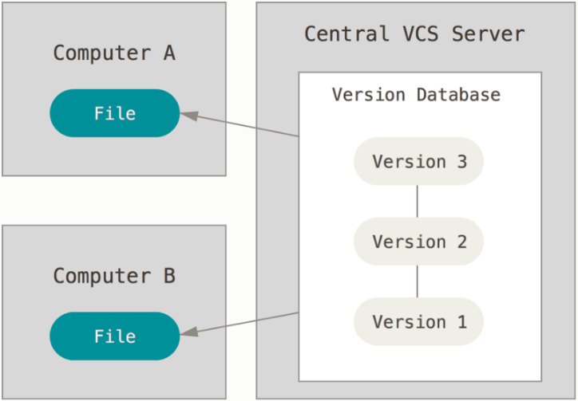

Introduction to Git
Hatem Mahmoud
Outline
- Introduction
- Git Basics
- Branching and Merging
- Updating and Sharing
- Using GitHub
Introduction
Version Control
A system that records changes to a file or set of files over time so that you can recall specific versions later.
Version Control
It allows you to revert files back to a previous state, revert the entire project back to a previous state, compare changes over time, see who last modified something that might be causing a problem, who introduced an issue and when, and more.
Local Version Control

Centralized Version Control
Distributed Version Control

Git History
- Between 1991 and 2002, changes to the Linux kernel project were passed around as patches and archived files.
- In 2002, it began using BitKeeper, a proprietary distributed version control system.
- In 2005, Linus Torvalds designed his own system, Git, influenced by BitKeeper.